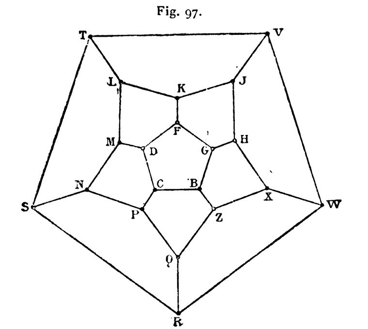
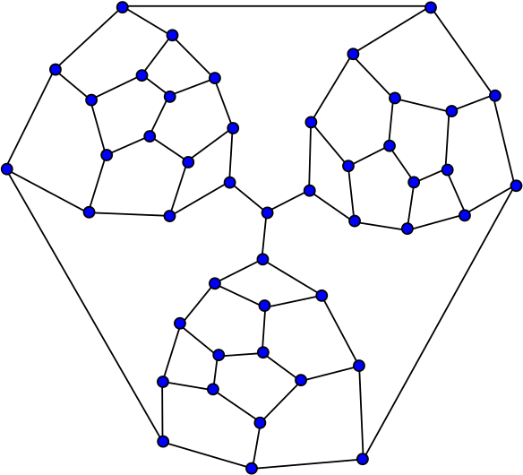
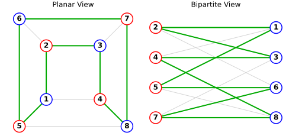

Every vertex once
In 1859 William Rowan Hamilton sold a puzzle to a London games maker for £25. It asked for a round trip that visits every corner of a solid exactly once. Which solids allow such a trip? For one large family, the answer arrived in 2026.
The Icosian game
Hamilton, Ireland’s Royal Astronomer, invented the game in 1856. The board is a flattened dodecahedron: 20 holes for its 20 corners, joined by 30 lines. The rule is simple. Travel along the lines, visit every hole once, and end where you started.
Jaques & Son of London sold it from 1859 in two versions: a wooden board with numbered pegs, and a hand-held half dodecahedron sold as The Traveller’s Dodecahedron, or a voyage round the world. Neither sold well. The puzzle was too easy.


A Hamiltonian cycle
Think of a solid as its skeleton: corners are vertices, edges are edges. A Hamiltonian cycle is a closed route along the edges that passes through every vertex exactly once. Drop the return to the start and you have a Hamiltonian path.
Finding one on the dodecahedron takes a minute. Proving that one exists on every solid of some kind is another matter.

Kirkman got there first
A year before Hamilton’s game, the English clergyman Thomas Kirkman asked the broader question in a paper for the Royal Society: which polyhedra have such a cycle? He found that some do not.
His trap: if every face has an even number of sides, a cycle must alternate between two kinds of corner, so it can only cover an even number of them. His example was a honeybee’s cell cut in half. It has 13 corners, so no cycle can visit them all. The name went to Hamilton anyway.

Tait’s guess
Peter Guthrie Tait, a physicist in Edinburgh, wanted to prove the four colour theorem. He saw a shortcut. Take a solid where every corner meets exactly three edges. If it has a Hamiltonian cycle, its faces can be coloured with four colours so that no two neighbours match.
So Tait guessed that every such solid has one. The guess stood for 62 years.

Tutte breaks it
W. T. Tutte had spent the war at Bletchley Park, where he worked out how the German Lorenz cipher machine was built. Back at Cambridge, he drew a solid with 46 corners, three edges at each, and no Hamiltonian cycle. Tait was wrong.

Barnette’s question
Tutte’s solid has faces with an odd number of sides. David Barnette, later a professor at UC Davis, asked what happens if every face is even.
Kirkman’s trap can’t spring then. When three edges meet at every corner and every face is even, the corners split into two equal halves, so their number is always even. Barnette conjectured that every such solid has a Hamiltonian cycle. In graph terms: every cubic, bipartite, 3-connected planar graph is Hamiltonian.
It appeared in 1969 as Conjecture 5 in Recent Progress in Combinatorics, a book edited by Tutte. Every solid in the game on the home page is one of Barnette’s.

Off the page, it fails
In 1971 Tutte guessed that the word planar could go. Joseph Horton proved him wrong with a graph of 96 vertices, three edges at each, corners split into two equal halves, and no Hamiltonian cycle. It cannot be drawn on paper without crossing edges, so it is not a solid. The smallest such graph, found later, has 50 vertices.
Barnette’s question, about solids, stood untouched.

Closing in
For half a century no one found a counterexample, and no one found a proof. In 1975 Paul Goodey settled the solids whose faces are only squares and hexagons. Computers checked every case up to 64 vertices in 1985, and up to 90 in 2022. In 2025 Tobias Schnieders covered every case with faces of at most eight sides.
Each result shrank the space where a counterexample could hide.

The proof
OpenAI’s paper Paired states and Hamiltonian cycles in cubic bipartite planar graphs, dated 24 September 2026 and released on 6 October, proves Barnette was right. It proves a little more: the cycle can avoid any one edge you choose.
Put a dot in every face and join the dots of neighbouring faces. The result is a triangulation, and a Hamiltonian cycle becomes a way to split its dots into two trees. The proof counts certain arrangements on the triangulation, each with a sign. The ones that contain a loop cancel out, yet the total is not zero. So an arrangement without a loop exists. It gives the two trees, and the trees give the cycle.
Fifty-seven years after Barnette asked, the answer is yes.